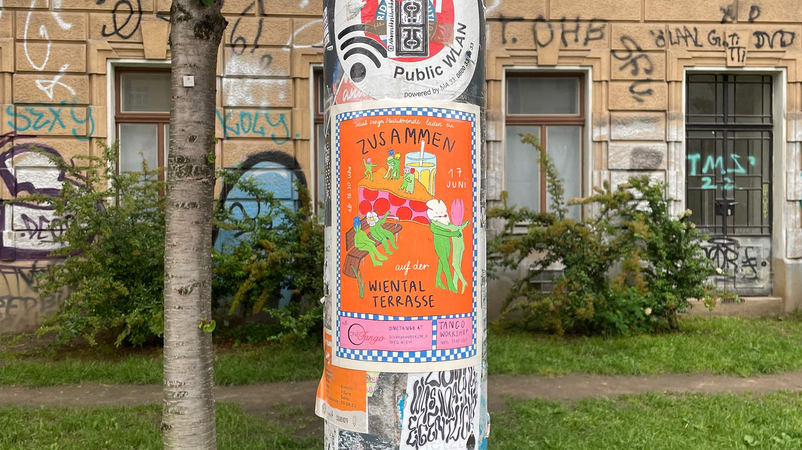
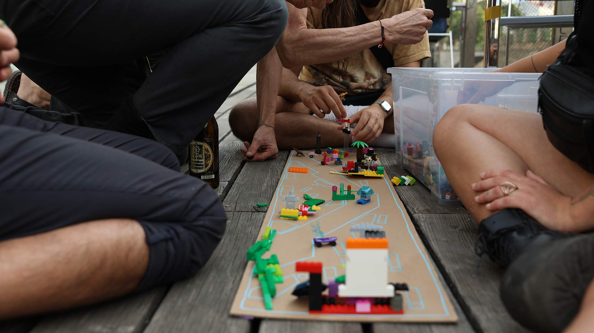
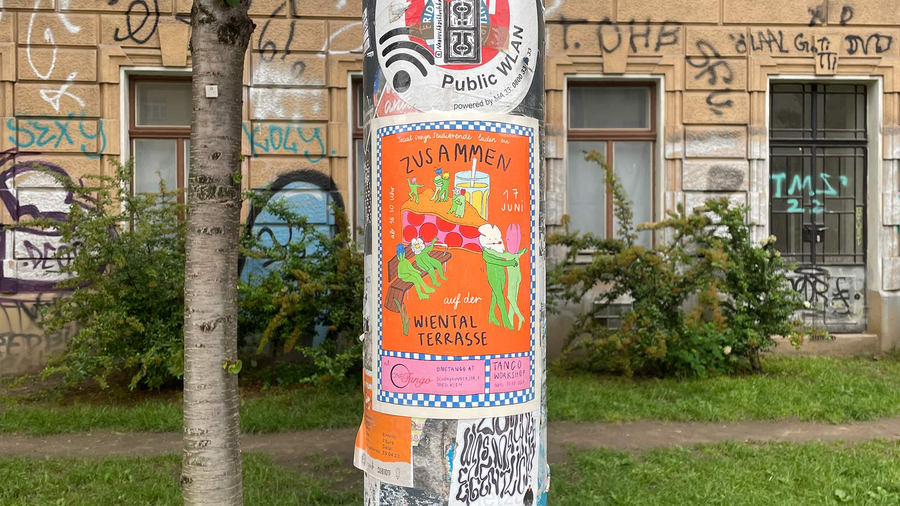
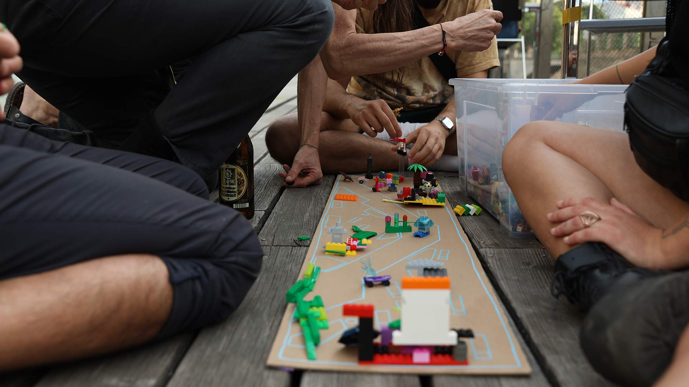
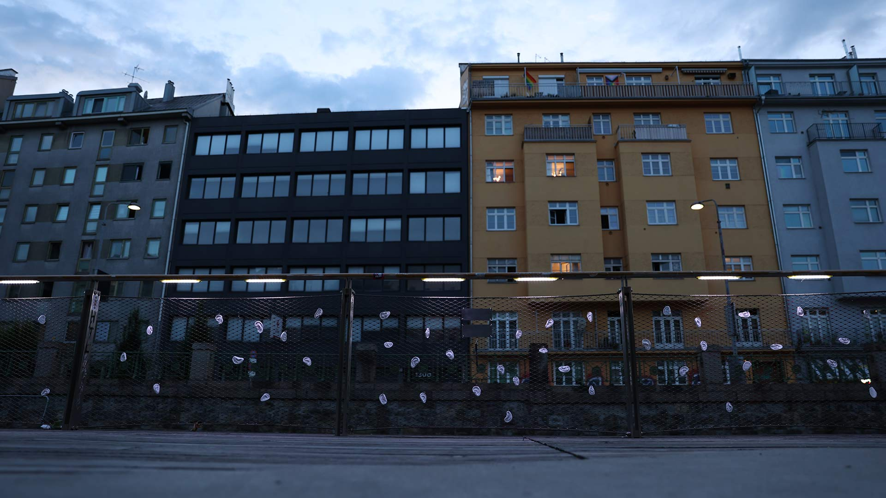
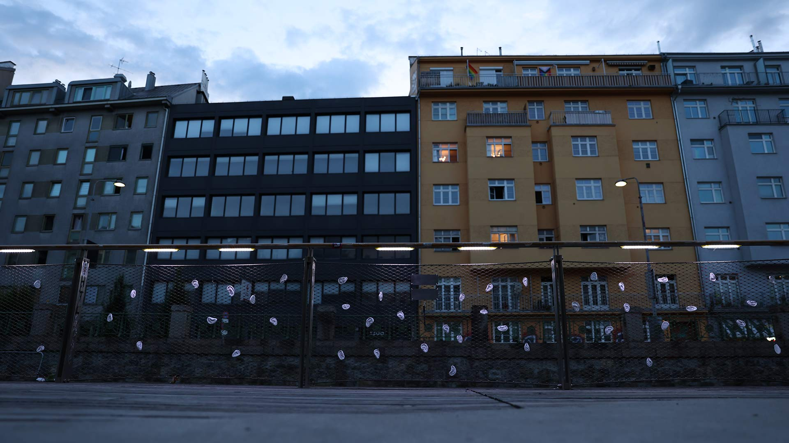
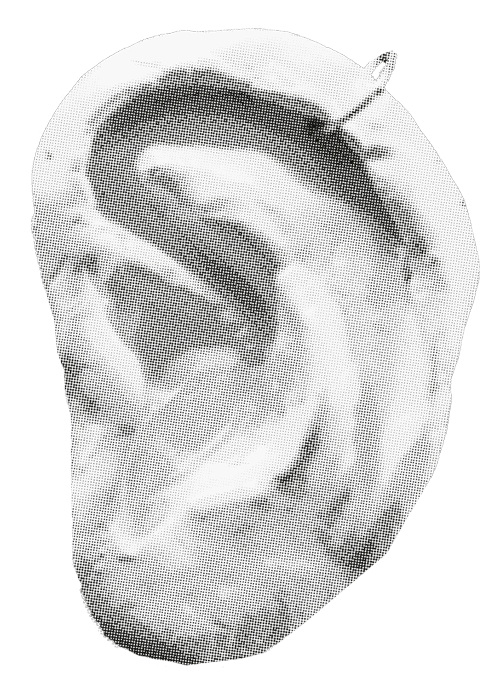

wientalterrasse
research, intervention, editorial,
vienna 2023.
 




 

The Wientalterrasse is a public, non-consumption recreational spot located at the edge of the Margareten district in Vienna. It was designed by local architects and the construction was finished in late 2015. Originally, three terraces were planned, however, only one of them was realized to this day.
In such a dense city and district, non-consumption public space can be scarce to find. Because of this, the Wientalterrasse can get crowded in the warm months and serve as a party spot during both weekend and weekday evenings. This, unfortunately, creates a ground for conflict between the partygoers and some local residents.
Me and my group partners Katarína Čechová, Tereza Sejková and Juliane Spieß decided to explore this conflict and its different narratives. The “noise problem” is complex, there are no obvious right or wrong perspectives and easy solutions. As Social Design students we are interested in public space in the city, non-consumption zones, and the usability of space and people’s experiences of it.
The Wientalterrasse is interesting because it connects all of these topics and provides an interesting research subject. During our research, it was very important for us to stay impartial as much as possible to the issue at hand and take all perspectives into account. We conducted interviews with residents and organizations relevant to our research, namely the architects who designed the terrace, the Gebietsbetreuung, Fair-Play Vienna, the local police, and both Club Commission Berlin and Vienna.
Our research efforts, findings and suggestions (based on the data we collected) were gatherd into document that can possibly be used in the future by the city and the architects, if another terrace or a project of a similar kind is planned.
The project started out as a research project, but at a certain point, we decided the project would also have other outputs along the research, namely a community event for the residents (in collaboration with the local Tango studio), and a physical intervention in the form of an artwork.
Execution with Katarína Čechová, Tereza Sejková e Juliane Spieß.
